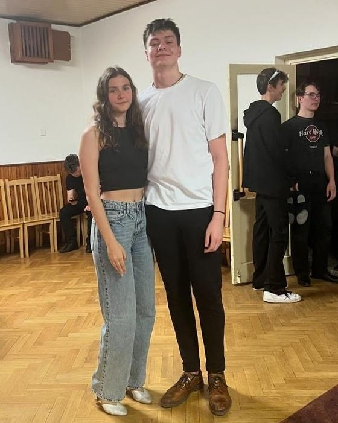
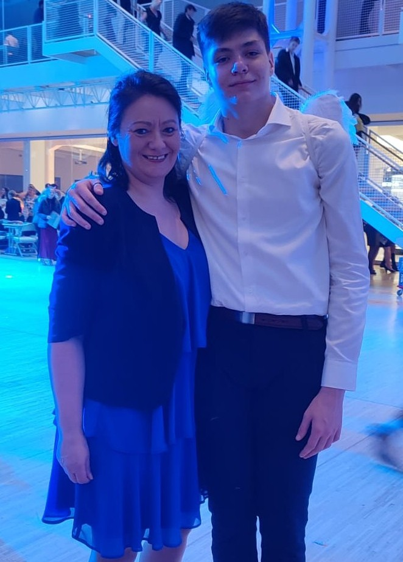
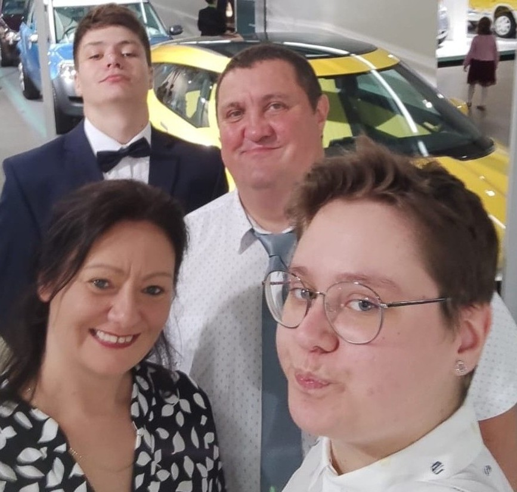

Tancovat jsme začali na začátku školního roku společně s kamarády ze základní školy. Nějak jsem ani nečekla, že bych v tom pokračoval, ale začalo mě to bavit, a tak jsme se s mojí taneční partnerkou dohodli, že v tancování budeme pokračovat i do pokračovacích kurzů.
Po pokračovacích kurzů jsme se také zúčastnily týdenního soustředění v Příchovicích u Kořenova, které bylo zaměřené hlavně na postoj a logiku společenskách tanců.
Tančím společenské tance pod vedením tanečního klubu Fis. Nejvíce mě baví a zároveň mi i jdou standartní tance, jako nepříklad waltz, a nebo tango. S tancem nemáme zatím žádné plány, spíše je to o tom, že nás to v momentální chvíli baví.


